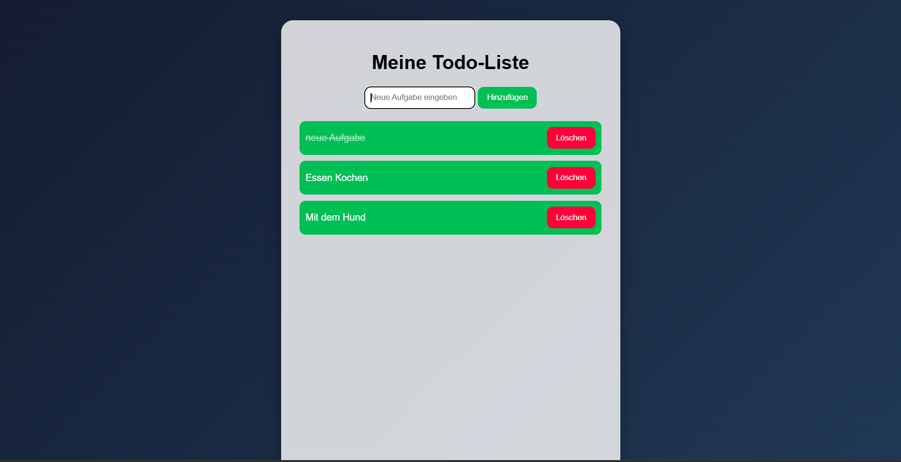

Portfolio Webentwicklung
Cedric Conrads
Vorbereitung auf die Umschulung zum Fachinformatiker für Anwendungsentwicklung
Ich beschäftige mich intensiv mit Webentwicklung und baue eigene Projekte mit HTML, CSS und JavaScript. Mein Ziel ist es, meine Kenntnisse Schritt für Schritt auszubauen und mich beruflich in der IT weiterzuentwickeln.
Meine Projekte ansehenMeine Projekte

To-Do-App
Eine kleine Aufgaben-App mit Hinzufügen, Löschen, Erledigt-Markierung, Enter-Funktion und Speicherung im Browser.
HTML · CSS · JavaScript · LocalStorage
Details ansehen
Musik-Landingpage
Eine moderne Landingpage im Musik-Stil mit Hero-Bereich, Navigation, Feature-Karten, Animationen und responsivem Design.
HTML · CSS · Responsive Design
Details ansehen
Mini-Rechner
Ein Rechner mit vier Grundrechenarten, Fehlerabfragen, Reset-Funktion und Tastaturbedienung.
HTML · CSS · JavaScript · Funktionen
Details ansehen
SkillTrack
Eine Lernfortschritt-App zur Verwaltung persönlicher Lernziele mit Fortschrittsanzeige, Prozentbalken und Speicherung.
HTML · CSS · JavaScript · LocalStorage
Details ansehenProjekt-Details
Was ich durch die Projekte gelernt habe
Durch die bisherigen Projekte konnte ich erste praktische Erfahrungen in der Webentwicklung sammeln. Ich habe gelernt, Webseiten mit HTML zu strukturieren, mit CSS modern zu gestalten und mit JavaScript interaktive Funktionen umzusetzen.
Besonders wichtig waren dabei Themen wie DOM-Manipulation, Event-Listener, Eingabefelder, Buttons, einfache Rechenlogik, LocalStorage, Fortschrittsanzeigen und responsives Design.
Die Projekte zeigen meine Eigeninitiative und meine Bereitschaft, mich aktiv auf den Einstieg in die IT und die Anwendungsentwicklung vorzubereiten.
To-Do-App Details
Projektbeschreibung
Die To-Do-App ermöglicht das Hinzufügen, Löschen und Abhaken von Aufgaben. Zusätzlich werden Aufgaben im Browser gespeichert, damit sie nach dem Neuladen erhalten bleiben.
Gelernt: DOM-Manipulation · Events · LocalStorage · dynamische Inhalte
Musik-Landingpage Details
Projektbeschreibung
Die Musik-Landingpage zeigt einen modernen Hero-Bereich, Navigation, Projektkarten, Animationen und responsives Design. Der Fokus lag besonders auf Layout, Farben, Abständen und moderner Darstellung.
Gelernt: HTML-Struktur · CSS-Layout · Flexbox · Responsive Design · Animationen
Mini-Rechner Details
Projektbeschreibung
Der Mini-Rechner kann Addition, Subtraktion, Multiplikation und Division ausführen. Außerdem wurden Fehlerabfragen, eine Reset-Funktion und Tastaturbedienung eingebaut.
Gelernt: Funktionen · Bedingungen · Eingaben auslesen · Rechenlogik
SkillTrack Details
Projektbeschreibung
SkillTrack ist eine Lernfortschritt-App. Lernziele können hinzugefügt, gelöscht und als erledigt markiert werden. Der Fortschritt wird als Text und Fortschrittsbalken angezeigt.
Die Daten bleiben durch LocalStorage auch nach dem Neuladen der Seite erhalten.
Gelernt: Arrays · LocalStorage · Fortschrittsberechnung · dynamische Anzeige
Aktuelle Kenntnisse
Warum IT?
Mich interessiert die IT, weil ich gerne logisch arbeite, Probleme analysiere und Lösungen Schritt für Schritt aufbaue. Besonders die Webentwicklung motiviert mich, da ich direkt sehen kann, wie aus Code eine funktionierende Anwendung entsteht.
Die bisher umgesetzten Projekte haben mir gezeigt, dass mir diese Arbeitsweise liegt und ich meine berufliche Zukunft gezielt in Richtung Anwendungsentwicklung aufbauen möchte.
Dokumentation & Lernnachweis
Portfolio-Übersicht
Zusätzlich zur Webseite gibt es eine PDF-Version meines Portfolios. Darin sind meine bisherigen Projekte, Kenntnisse und Lernfortschritte übersichtlich zusammengefasst.
Portfolio · Webentwicklung · Lernnachweis
Portfolio-PDF öffnenProjekt-Dokumentation
Diese Übersicht zeigt, welche Projekte ich umgesetzt habe, welche Funktionen enthalten sind und welche Technologien ich dabei verwendet habe.
HTML · CSS · JavaScript · Projektstruktur
Lernnachweis
Der Lernnachweis zeigt meine bisherigen Fortschritte in der Webentwicklung und meine gezielte Vorbereitung auf eine Umschulung im Bereich Anwendungsentwicklung.
Eigeninitiative · Lernfortschritt · Webentwicklung
Kontakt
Dieses Portfolio zeigt meine ersten praktischen Projekte im Bereich Webentwicklung. Mein Ziel ist es, meine Kenntnisse weiter auszubauen und mich gezielt auf eine Umschulung im Bereich Fachinformatik für Anwendungsentwicklung vorzubereiten.
E-Mail: cedric.conrads@icloud.com